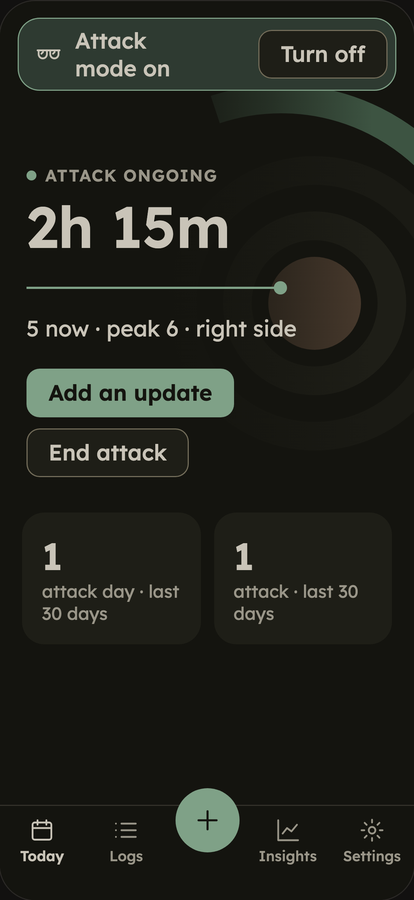
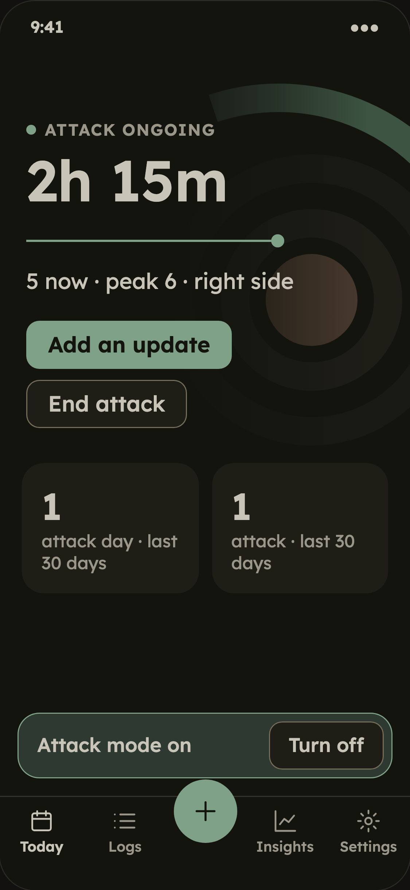
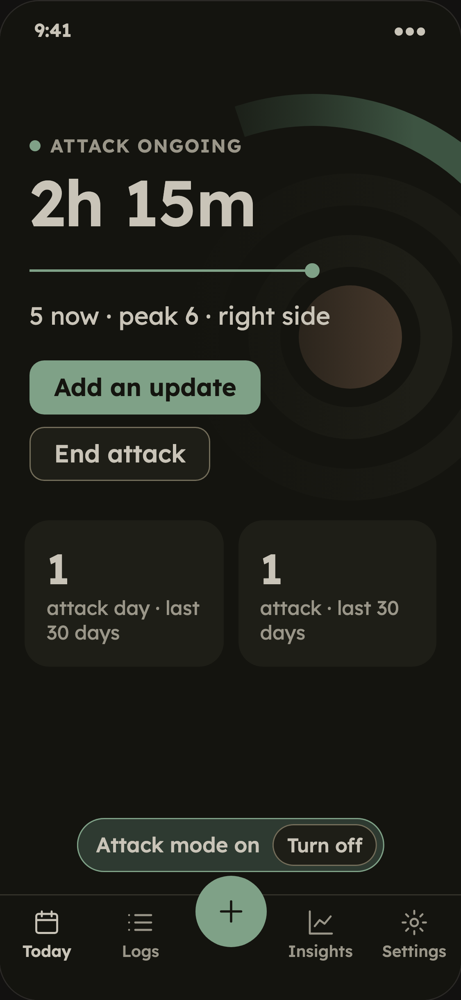
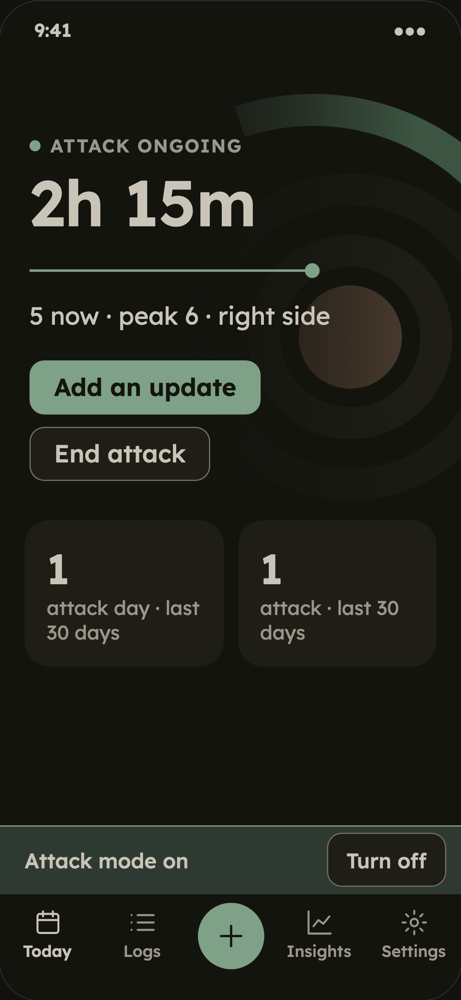
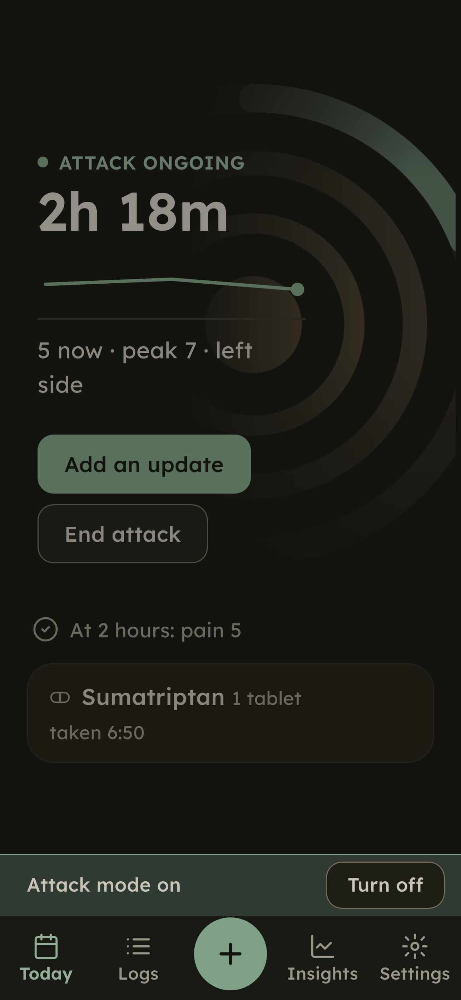

In attack mode every text is larger. The band at the top wrapped to two lines and pushed the headline down, so the top of the screen was heaviest exactly when it should be quietest. Four bottom placements, mocked side by side with attack mode on.

Two lines at 20px text. “Turn off” is in the corner furthest from the thumb.

The smallest change, but it covers a card’s height of content, and it’s only a way out on Today.
A way out from any screen, but a card floating over every screen while it’s on.

The lightest, but a 34px “Turn off” sitting on the busiest tap spot on the screen.

Part of the app’s frame, not a card over content. It reads as “a mode is on”, and stays on every tab.

Text and height fixed in pixels, so it stays on one line even at 150% text size.